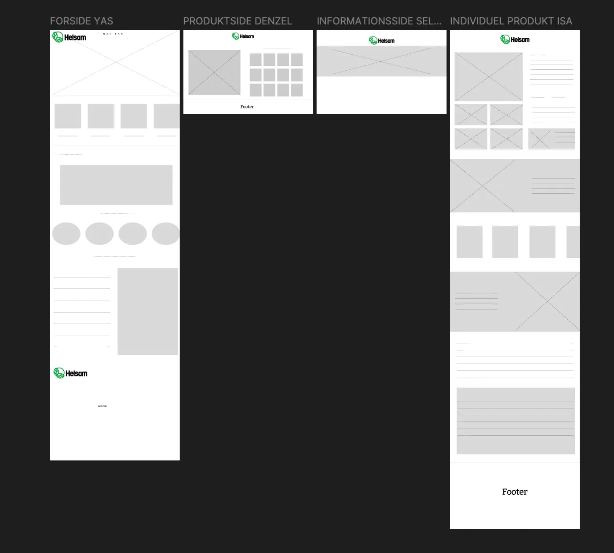
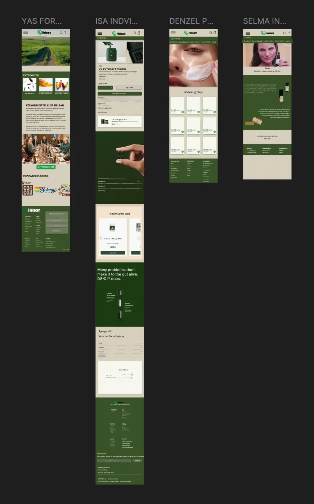
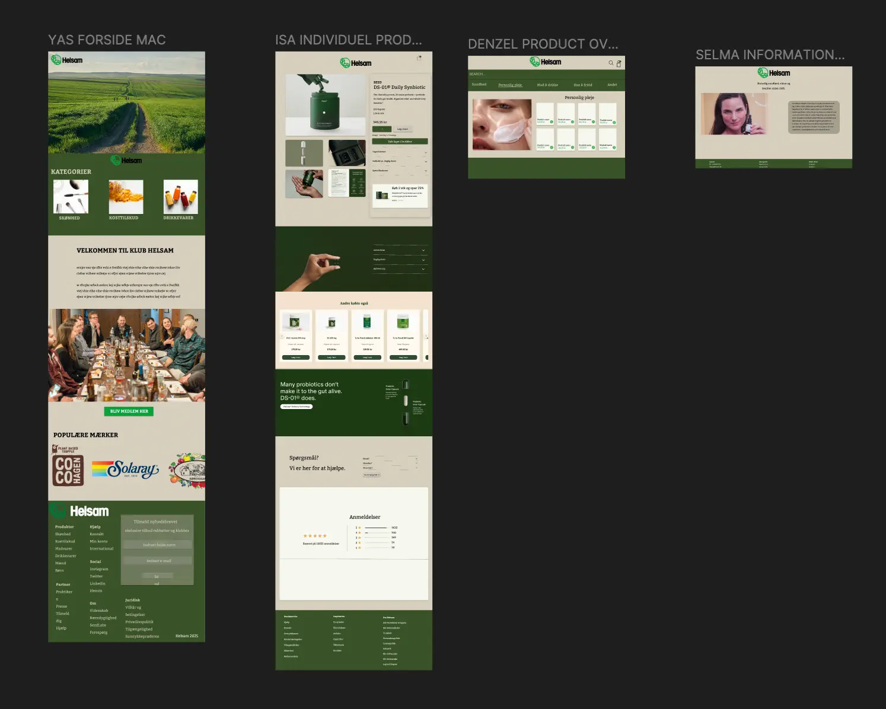
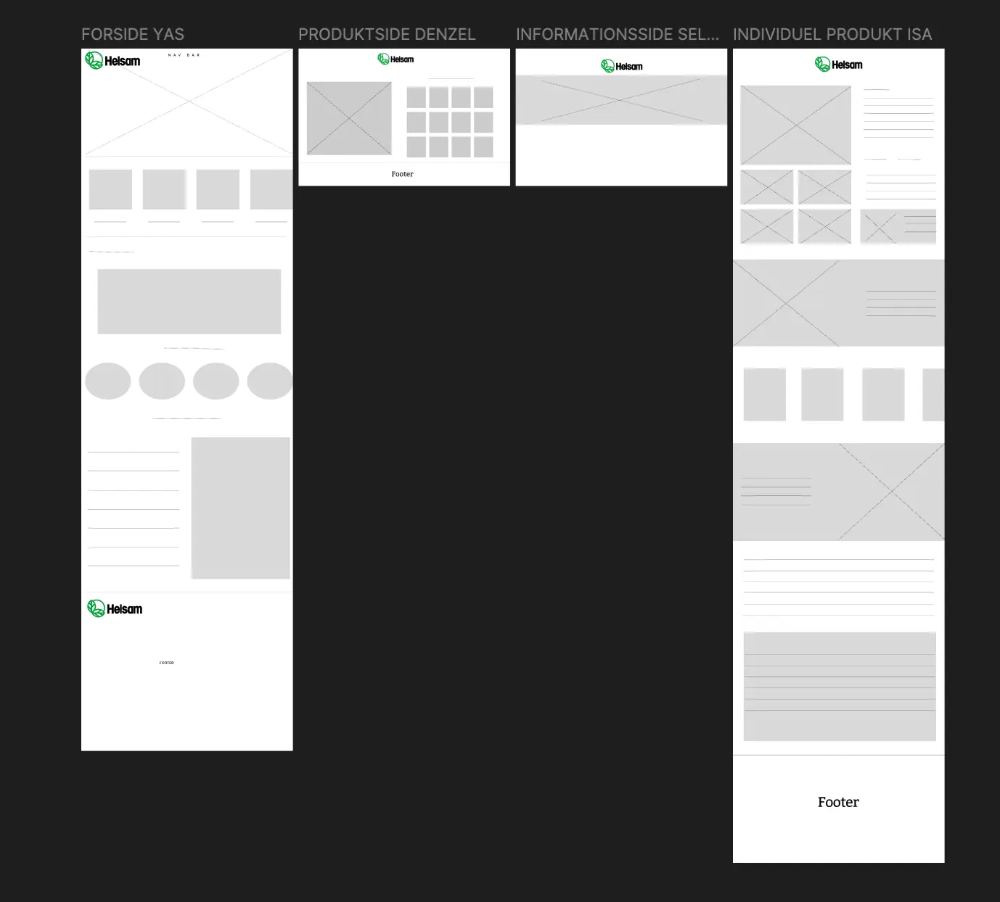
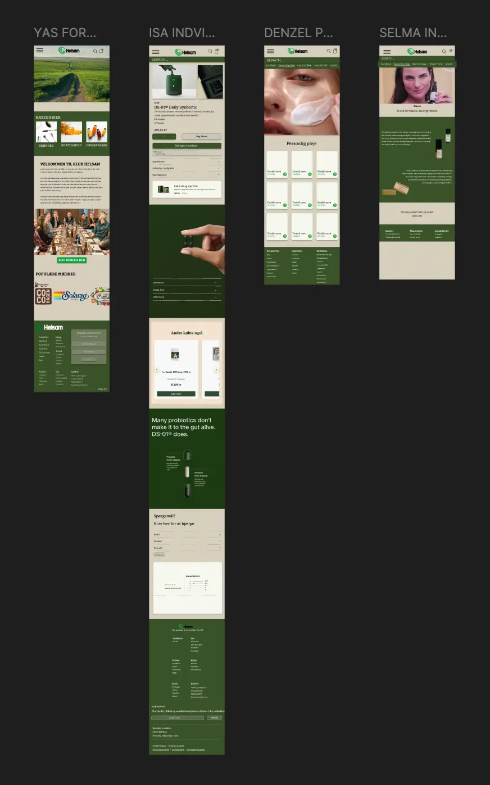
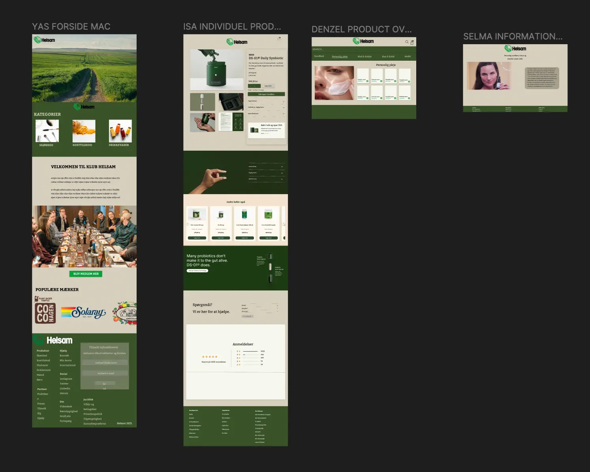
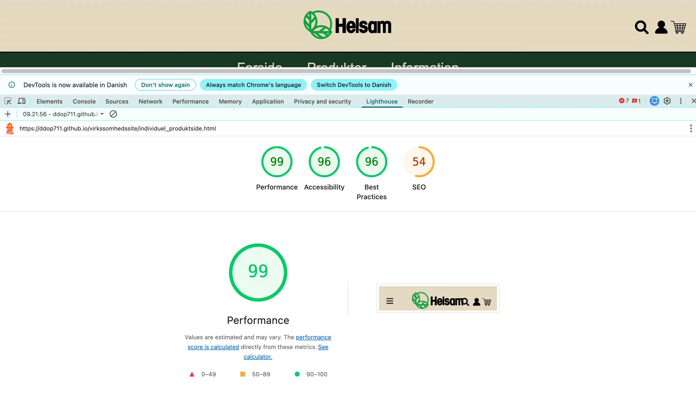
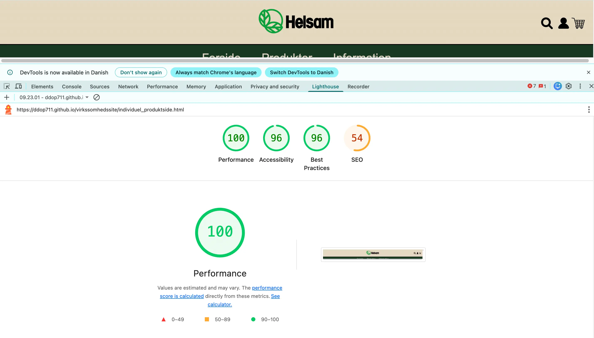
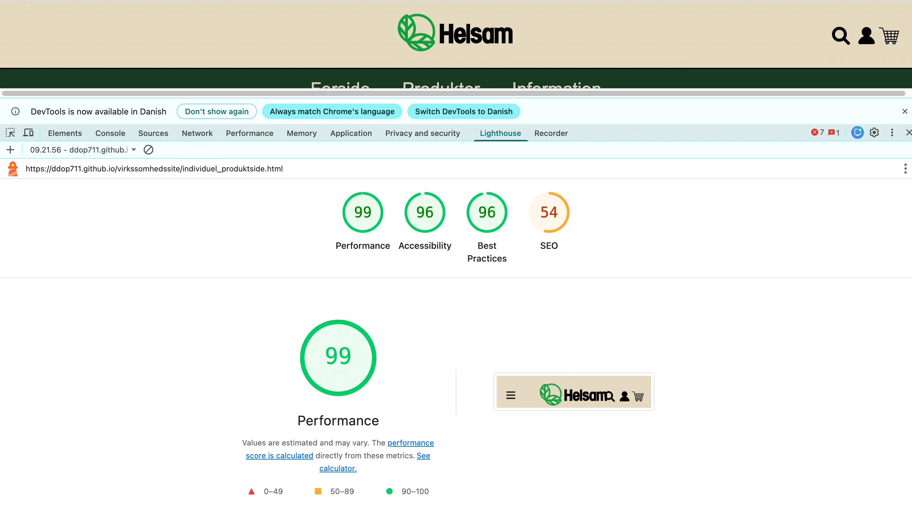
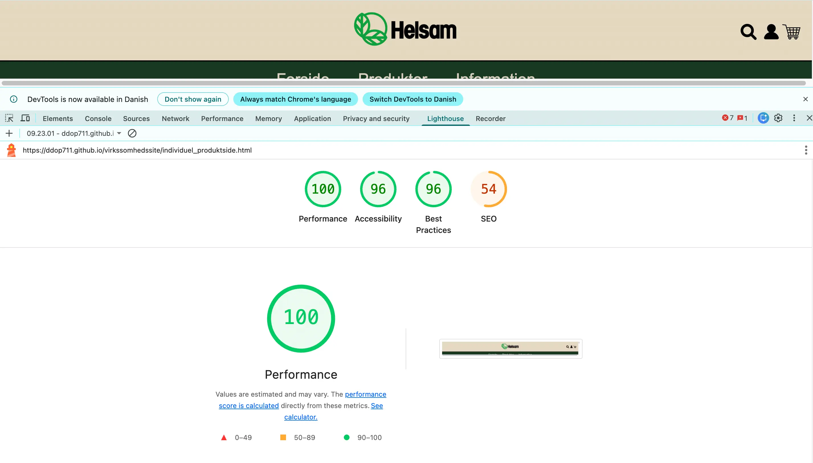

Tema 05 · Grundlæggende Indhold
Indholdsproduktion og virksomhedssite
Her samler jeg mit pensum fra Tema 05 og mine afleveringer, så det er tydeligt, hvordan jeg planlægger, producerer og efterbehandler indhold – og hvordan jeg bruger det i et redesign-projekt.
Sådan arbejdede jeg med indhold i Tema 05
Tema 05 var opdelt i to dele: 1) en kreativ indholdsproduktionsopgave, hvor vi skulle fortælle en historie uden tekst, og 2) et virksomhedsredesign, hvor vi producerede indhold og arbejdede med tests, samarbejde og dokumentation.
Proces-overblik
-
1) Intro til temaet og rammerne
Gruppedannelse, opgavekrav og plan for indholdsproduktion.
-
2) Opgave 1 — “En lille historie”
Historie fortalt med video, lyd og stillbilleder – uden tale.
-
3) Preproduktion
Idé, stemningsord, shotlist, lydliste og storyboard.
-
4) Produktion — “shooting for the edit”
Mastershot + B-roll + 5-shot sequence, stabilitet, komposition og lys.
-
5) Opgave 2 — Virksomhedsredesign (i gruppe)
Redesign af virksomhedssite med indholdsproduktion, struktur og dokumentation.
-
6) Samarbejde og organisering
Trello, samarbejdskontrakt, Git/GitHub og daglig SCRUM.
-
7) Idéudvikling og brainstorm
Valg af virksomhed + retning for redesign.
-
8) Research og interview
Virksomhed, bruger og kontekst + virksomhedsbesøg og interview.
-
9) Moodboard
Visuel retning med stemning, farver og værdiord.
-
10) Styletile
Farver, typografi, UI-elementer og tone of voice.
-
11) Indholdsproduktion
Tekst, billeder og struktur (inkl. hero-video).
-
12) Wireframes
LoFi/HiFi, mobile og desktop.
-
13) Prototype
Fra wireframes til klikbar løsning.
-
14) Kodning
Implementering og dokumentation.
-
15) Test og evaluering
Likert-skala + heuristisk evaluering + Lighthouse.
-
16) Præsentation
Pitch, visuelle valg og formidling.
-
17) Refleksion
Læring, ansvar, udfordringer og hvad jeg tager med videre.
1) Intro til temaet og rammerne
Temaets fokus
- Preproduktion: planlægning, storyboard, shotlist og lydliste
- Produktion: optagelser med smartphone (video + lyd + foto)
- Postproduktion: redigering i Premiere Pro + billedbehandling i Photoshop
- Redesign: anvende indholdet i et virksomhedssite + dokumentation
To dele – to grupper
Temaet var opdelt i to større opgaver, og derfor arbejdede jeg i to forskellige grupper: først en 3-personers indholdsopgave og derefter en ny 4-personers gruppe til redesign.
Hvad lærte jeg helt konkret?
- At fortælle en historie uden ord: billeder + lyd + lys
- At planlægge optagelser, så redigering bliver lettere (“shooting for the edit”)
- At arbejde systematisk med samarbejde (Trello, SCRUM, GitHub)
- At teste og forbedre et site med simple, effektive metoder
2) Opgave 1 — “En lille historie” (video, lyd og billeder)
Opgavekrav
- Video: max 60 sekunder
- Historien skal forstås uden tale
- Brug video + lyd + stillbilleder
- Dokumentér proces med min. 5 procesfotos
Vores aflevering
Vi arbejdede med en enkel idé og en tydelig stemning, så fortællingen kunne bæres af billedsprog og lyddesign.
Dokumentation

3) Preproduktion — shotlist, lydliste og storyboard
Tjekliste før optagelse
- Idéformulering: en ting + en stemning + et øjeblik
- 3 stemningsord: (fx rolig / hyggelig / varm)
- Shotlist: 6–10 planlagte shots
- Lydliste: ambience + handling-lyd tæt på kilden
- Storyboard: plan for indstillinger, klip og rytme
Værktøjer vi brugte
- 5-shot sequence: wide, close-up, hands, reaction, creative
- Komposition: rule of thirds, afstand og lysretning
- Storyboard: tegnet/visualiseret som plan for optagelserne
Storyboard
4) Produktion — “shooting for the edit”
Sådan optog jeg materialet
- Min. 1 mastershot(overblik + kontekst)
- En komplet 5-shot sequence
- 5–10 B-roll klip (detaljer og stemning)
- Korte klip (ca. 3–7 sek.) for flow i redigering
- Undgik rystelser, modlys og for lange optagelser
Dokumentation
5) Opgave 2 — Virksomhedsredesign (i gruppe)
Rammer og krav
- Virksomhed med fysisk lokation (kan filmes)
- Min. én medarbejder villig til interview/film
- Redesign + indholdsproduktion (tekst + stillfotos + evt. video)
- Dokumentation og præsentation af proces
Min rolle
Jeg tog hovedansvar for at få projektet i mål: planlægning, produktion og store dele af kodningen/dokumentationen, så vi kunne levere et resultat inden deadline.
Professionel note om samarbejde
I redesign-delen opstod der udfordringer i samarbejdet, hvilket betød, at jeg overtog hovedansvaret for at sikre fremdrift. Jeg afgrænsede opgaven, så hvert gruppemedlem fik ansvar for én side. Min egen side blev færdiggjort og dokumenteret, mens de øvrige sider desværre ikke blev leveret til tiden.
Jeg har derfor valgt at fokusere på at vise den del af projektet, jeg selv har udviklet: proces, valg, kodning og refleksioner.
6) Samarbejde og organisering
Det vi blev introduceret til
- Trello til opgavestyring
- Samarbejdskontrakt (forventninger og ansvar)
- Daily SCRUM + statuslinjer
- Git og GitHub (pull/push/commit + .gitignore)
Det vigtigste jeg tager med
- Struktur tidligt: opgaver, ansvar og deadlines
- Jeg kan drive et projekt fremad med overblik og ansvar – også under pres
- GitHub giver transparens: hvem laver hvad, og hvornår
Dokumentation
7) Redesign — idéudvikling og brainstorm
Teori fra pensum
- Idéudvikling som divergerende fase (åbne muligheder)
- Brainstorm uden censur → efterfulgt af udvælgelse
- Fokus på stemning, fortælling og brugerens oplevelse
Sådan arbejdede vi
Vi startede redesign-opgaven med en fælles brainstorm, hvor fokus var på virksomhedens identitet, stemning og fortælling. Brainstormen blev dokumenteret i Figma og fungerede som fundament for både research, visuel retning og indholdsproduktion.
Dokumentation
8) Research — virksomhed, bruger og interview
Teori fra pensum
- Research som grundlag for kvalificerede designbeslutninger
- Forstå målgruppe, kontekst og behov
- Analyse af eksisterende løsning (styrker/svagheder)
- Interview som kvalitativ metode til indsigt
- Observation af rum, stemning og kontekst
Virksomhedsbesøg og interview
Under virksomhedsbesøget observerede jeg den fysiske lokation og gennemførte interview. Interviewet med butikschefen fra Helsam Nørrebro gav indsigt i værdier, målgruppe og ønsker for det digitale udtryk.
Indsigter
- Behov for tydeligere struktur og sektionering
- Større fokus på stemning og fortælling
- Mere brugervenlig navigation og bedre prioritering af indhold
9) Moodboard
Teori fra pensum
- Moodboards som visuel research og fælles reference
Moodboard
På baggrund af interview og observationer udviklede vi hver vores moodboard, som indfangede stemning, farver, materialer og visuelle referencer, der senere blev omsat til konkrete designvalg.
Resultat
10) Styletile — fra stemning til designvalg
Teori fra pensum
- Styletile som bro mellem moodboard og færdigt design
- Farver, typografi, UI-elementer og tone of voice
- Konsistens og genkendelighed
Mine designvalg
Styletilen samlede farvepalette, typografi og UI-komponenter i ét visuelt overblik. Fokus var på et udtryk, der matcher virksomhedens identitet og understøtter brugervenlighed og troværdighed.
Dokumentation
11) Indholdsproduktion — tekst, billeder og struktur
Teori fra pensum
- Indhold skal understøtte brugerens mål
- Visuelt hierarki og læsbarhed
- Sammenhæng mellem tekst og billeder
Indholdsproduktion
Vi arbejdede med indholdsproduktion med fokus på klar formidling, prioritering af information og visuel ro. Flere videoer blev klippet sammen til en hero-video på forsiden. Billeder og tekst blev tilpasset layoutet, så indholdet guider brugeren naturligt gennem siden.
Dokumentation
12) Wireframes — LoFi og HiFi
Teori fra pensum
- LoFi: struktur og flow
- HiFi: visuelt hierarki og detaljer
- Mobil-first og responsiv tænkning
Proces
Jeg brugte LoFi wireframes til at fastlægge struktur og indholdsplacering, før der blev arbejdet videre med HiFi wireframes, hvor visuelle valg og interaktioner blev konkretiseret.
Dokumentation
 





13) Prototype — fra wireframes til klikbar løsning
Teori fra pensum
- Prototype bruges til at afprøve struktur, flow og interaktion
- Klikbar prototype gør det muligt at teste tidligt (før kodning)
- Iterativ proces: test → justér → forbedre
Sådan arbejdede jeg
På baggrund af LoFi og HiFi wireframes samlede jeg løsningen i en klikbar prototype, så vi kunne afprøve navigation, hierarki og brugerens flow, inden vi gik videre til kodning.
Dokumentation
14) Kodning — implementering og dokumentation
Teori fra pensum
- Frontend-implementering: omsætte design til fungerende UI
- Versionsstyring i Git/GitHub (commit, pull, push)
- Validering og optimering (struktur og performance)
Min implementering
Jeg omsatte prototypen til et kodet site med fokus på struktur, genbrugelige komponenter og læsbarhed. Jeg arbejdede mobil-first og sikrede, at layout og indhold fungerer på både mobil og desktop.
Kode-dokumentation
15) Test og evaluering (Likert + heuristik + Lighthouse)
Metoder
- Likert-skala: måler holdninger/oplevelse (fx 1–5 eller 1–7)
- Heuristisk evaluering: hurtig ekspertgennemgang med usability-heuristikker
- Lighthouse: performance, accessibility, SEO og best practices
Hvorfor test er vigtigt
Test gør det muligt at forbedre løsningen ud fra observationer og målinger (ikke kun mavefornemmelser) – og det gør processen lettere at forklare til eksamen.
Dokumentation
 



16) Præsentation — pitch og formidling
Teori fra pensum
- Klar struktur: indledning → proces → løsning → konklusion
- Show & tell: vis proces og beslutninger
- Tidsstyring og prioritering af pointer
Præsentationen
Præsentationen samlede research, designvalg, indholdsproduktion og refleksioner i et overskueligt pitch. Fokus var på at forklare hvorfor løsningen ser ud, som den gør – ikke kun hvordan.
Dokumentation
17) Konklusion og refleksion
Det vigtigste jeg lærte
- God preproduktion giver bedre optagelser og lettere redigering
- Lyd er mindst lige så vigtig som billede for stemning
- Systematik (Trello + GitHub) skaber overblik og fremdrift
- Test giver et stærkere grundlag for forbedringer og argumentation
Refleksion over forløbet
Tema 05 var specielt, fordi vi skiftede grupper midt i forløbet. I redesign-delen gav det mig en læring i at håndtere et projekt under pres og sikre fremdrift, også når leverancer udebliver. Jeg er stolt af, at jeg kunne drive opgaven så langt i mål på så kort tid – og samtidig bevare kvalitet og struktur i processen.